Photo Gallery and Videos
Visual documentation of GD Naidu's life and work
Historical Photographs

G. D. Naidu Portrait

Indigenous Electric Motor
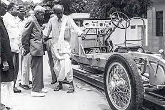
Prototype Indigenous Car
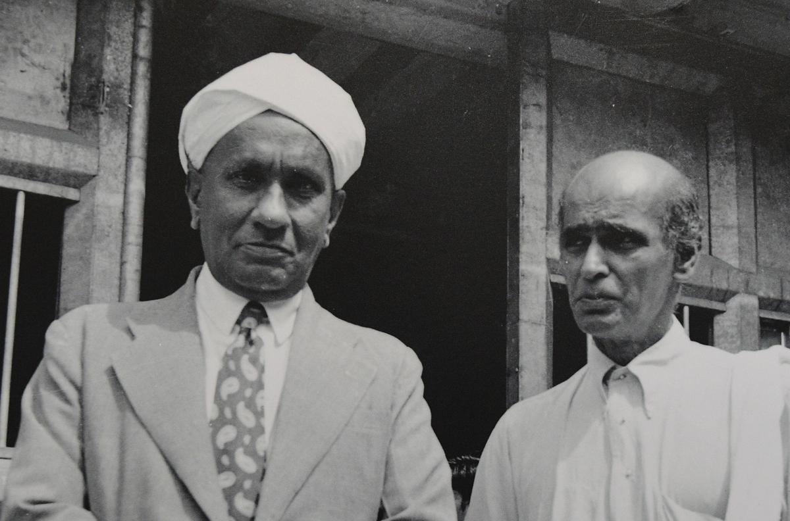
Photograph of C. V. Raman with a G. D. Naidu
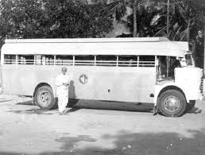
Universal Motor Service (UMS) Bus Fleet
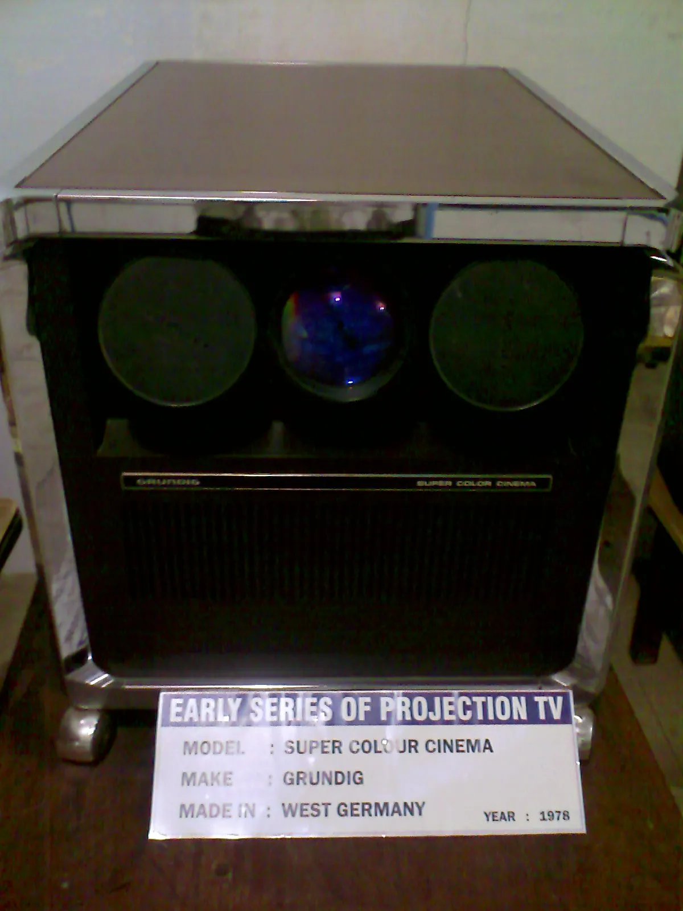
Early Image Projection
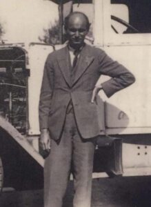
Gopalaswamy Doraiswamy Naidu
(Single Pic)
(Single Pic)
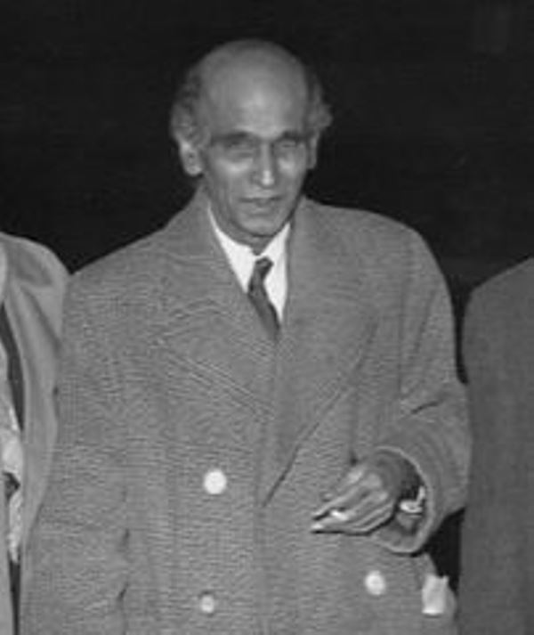
Gopalaswamy Doraiswamy Naidu
(Single Pic)
(Single Pic)
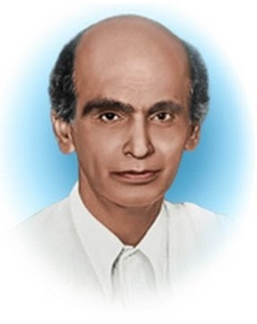
Gopalaswamy Doraiswamy Naidu
(Single Pic)
(Single Pic)

G.D. Naidu with Pioneers of His Time
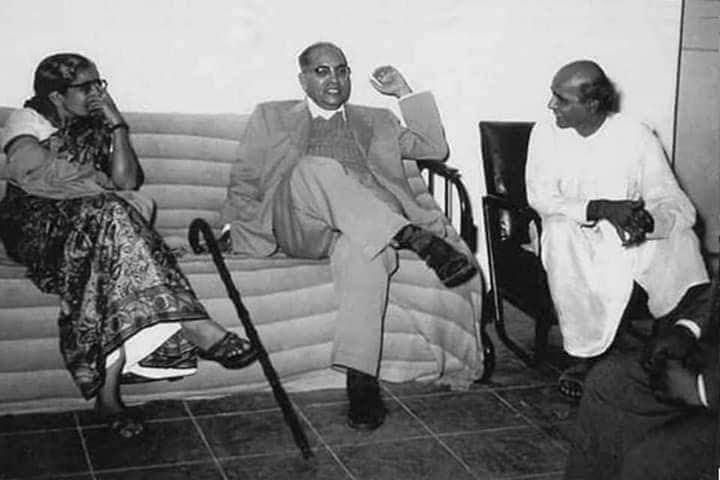
Dr. Savita Ambedkar, Dr. B.R. Ambedkar & G.D. Naidu
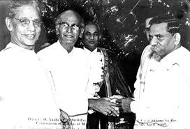
Three Visionaries: Radhakrishnan, Naidu & Periyar
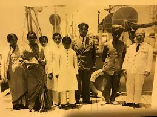
G D Naidu, Indian Inventor and Innovator from Coimbatore
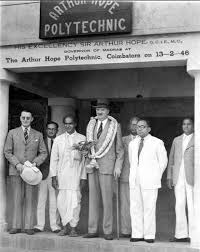
Sir Arthur Hope & G.D. Naidu
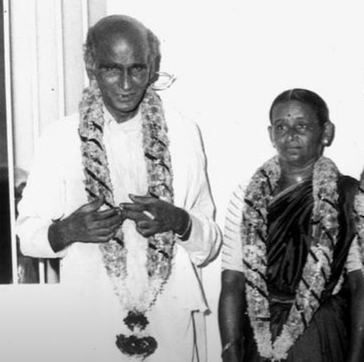
G.D. Naidu with His Wife Sarojini Chattopadhyaya
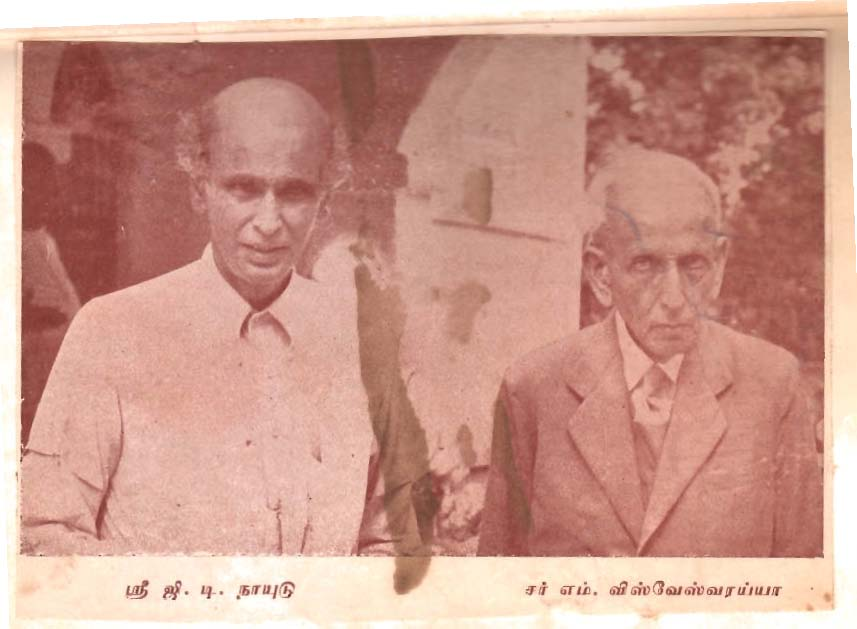
G.D. Naidu with Sir M. Visvesvaraya
Documentary Videos
These videos provide deeper insights into Naidu's life and inventions:
Periyar | GD Naidu | Maniammai
A detailed look into Naidu’s contribution to Indian industry and engineering.
G.D. NAIDU: THE UNTOLD STORY
Exploring how Naidu built indigenous technology with limited resources.
Edison of India: The Untold Story of G.D. Naidu
A documentary on Naidu’s journey from village life to national recognition.
GD Naidu: The Edison of India
A comprehensive documentary exploring the life and inventions of GD Naidu.
Naidu's Inventions: Technical Analysis
Engineers examine the technical innovations behind GD Naidu's inventions.
The Legacy of GD Naidu
Exploring how GD Naidu's work continues to influence modern Indian innovation.